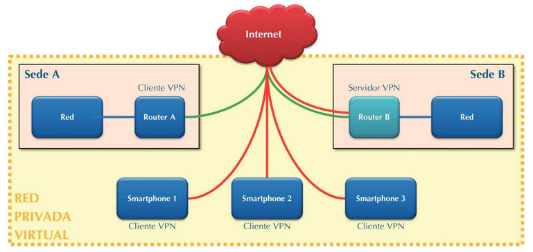

Tipos de VPNs
Introducción
Las VPNs se pueden clasificar en diferentes tipos según su propósito y arquitectura. En este capítulo, analizaremos en detalle cada tipo, sus características específicas y escenarios de implementación más adecuados.
Objetivos de Aprendizaje
- Comprender las diferencias entre los tipos principales de VPNs
- Identificar los casos de uso óptimos para cada tipo
- Aprender a seleccionar la solución VPN más apropiada
- Entender las consideraciones de implementación
Clasificación de VPNs
Por Método de Conexión
- Acceso Remoto
- Sitio a Sitio
- Extranet VPN
Por Nivel de Seguridad
- Trusted VPN
- Secure VPN
- Hybrid VPN
Por Protocolo
- SSL/TLS VPN
- IPSec VPN
- PPTP VPN
VPN de Acceso Remoto

(En verde -> conexión sitio a sito | En rojo -> conexión de acceso remoto)
Características Técnicas
-
Arquitectura Cliente-Servidor
El cliente inicia la conexión hacia el servidor VPN corporativo.
-
Autenticación Individual
Cada usuario requiere credenciales únicas para conectarse.
-
Asignación Dinámica de IP
Los clientes reciben direcciones IP del pool corporativo.
Consideraciones de Implementación
- Gestión de certificados digitales
- Políticas de acceso por usuario
- Monitorización de conexiones
- Registro de actividades
Ejemplo de Configuración
# Configuración básica de cliente VPN remote vpn.empresa.com port 1194 proto udp dev tun auth-user-pass cipher AES-256-CBC verify-x509-name "VPN-Server" name
VPN Sitio a Sitio
(En verde -> conexión sitio a sito | En rojo -> conexión de acceso remoto)
Características Técnicas
-
Conexión Permanente
Enlace constante entre ubicaciones.
-
Enrutamiento Automático
Configuración de rutas estáticas o dinámicas entre redes.
-
Alta Disponibilidad
Mecanismos de failover y redundancia.
Diagrama de Implementación Típica

Conexión entre dos oficinas mediante VPN sitio a sitio
Ejemplo de Configuración
# Configuración de router VPN crypto isakmp policy 10 encryption aes 256 hash sha authentication pre-share group 2 ! crypto ipsec transform-set TS esp-aes 256 esp-sha-hmac mode tunnel
Casos de Uso Específicos
Teletrabajo
- Acceso a recursos corporativos
- Seguridad en conexiones domésticas
- Flexibilidad laboral
Conexión entre Sedes
- Unificación de redes
- Compartición de recursos
- Centralización de servicios
Acceso de Proveedores
- Acceso limitado a recursos
- Control de acceso granular
- Auditoría de actividades
Ejercicios Prácticos
Ejercicio 1: Análisis de Requisitos
Una empresa necesita implementar una solución VPN. Analiza el siguiente escenario:
- 200 empleados en teletrabajo
- 3 oficinas principales
- Necesidad de acceso a aplicaciones internas
Mejores Prácticas
-
Planificación
Realizar un análisis detallado de necesidades antes de la implementación.
-
Seguridad
Implementar múltiples capas de seguridad y autenticación.
-
Monitorización
Establecer sistemas de monitoreo y alerta temprana.
-
Documentación
Mantener documentación actualizada de configuraciones y políticas.